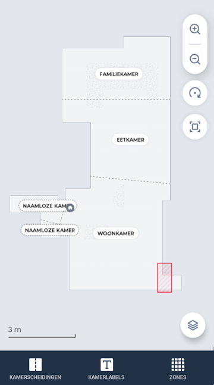
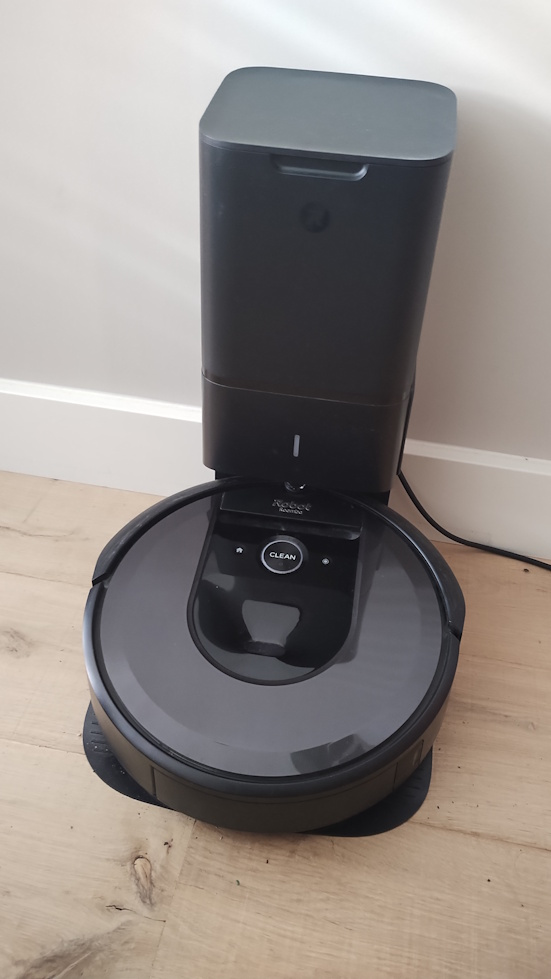

De Roomba i7+ is een apparaat dat langzaam van “gadget” verandert in een vast onderdeel van je huishouden.
Zeker als hij dagelijks draait, merk je pas echt hoeveel werk hij uit handen neemt. De vraag is alleen: hoe goed houdt hij zich staande tussen nieuwere modellen?
Eindoordeel
Nog steeds een betrouwbare keuze, vooral als je waarde hecht aan automatisering en gemak.
Bekijk actuele prijs en beschikbaarheid
Dit zijn passende links bij het product uit deze review.
Wat is het?
De Roomba i7+ is een robotstofzuiger die zelfstandig je huis schoonmaakt en automatisch zijn stofbak leegt.
- Smart mapping → Leert je woning en onthoudt kamers
- Zelflegende functie → Leegt automatisch in het basisstation
Het doel is duidelijk: zo min mogelijk handmatig werk, met een systeem dat zelfstandig blijft draaien.
Eerste indruk en gebruikservaring
De eerste schoonmaakrondes voelen wat zoekend, maar daarna zie je dat de robot efficiënter wordt en gerichter werkt.

Pluspunten
- Zelf leegstation haalt een belangrijke handmatige stap weg
- Betrouwbaar in dagelijks gebruik
- Werkt goed met automatiseringen
- Consistente schoonmaakresultaten
Minpunten
- Kan vastlopen op kabels of kleine objecten
- Geen geavanceerde obstakeldetectie
- Technisch verouderd t.o.v. nieuwere modellen
- Niet de krachtigste in zijn klasse
Integratie en compatibiliteit
In combinatie met een smart home systeem zoals Homey wordt de i7+ echt interessant.
- Start automatisch wanneer je van huis bent
- Stopt zodra je thuiskomt
- Onderdeel van dagelijkse routines

Voor wie is dit een goede keuze?
Voor iedereen die een betrouwbare robotstofzuiger zoekt zonder direct het nieuwste model nodig te hebben. Zeker interessant als je hem wilt integreren in een smart home setup.
Voor wie juist niet?
Als je maximale prestaties, slimme obstakeldetectie of de nieuwste technologie wilt, zijn nieuwere modellen een betere keuze.
Aandachtspunten
- Ruim kabels en losse objecten op voor gebruik
- De eerste runs zijn nodig om goed te leren navigeren
- Nieuwere modellen bieden meer intelligentie
Conclusie
De Roomba i7+ is geen hype-product meer, maar dat is juist zijn kracht. Hij doet wat hij moet doen, dag in dag uit.
Wil je het nieuwste van het nieuwste, dan zijn er betere opties. Maar wil je een betrouwbare robotstofzuiger die goed integreert en vooral gewoon werkt, dan is de i7+ nog steeds een uitstekende keuze.